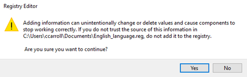

19. Constructing an ARIMA Model Quiz
Quiz Intro
Build Your First ARIMA Model
Now's you chance to get some practice. You'll now build your first ARIMA model using the Champagne Sales dataset, which is the same dataset you used to build your ETS model. Use the steps below to guide you. (HINT: Like the ETS tool, the ARIMA tool has an auto setting under the model customization tab. You can check your manual model and what the auto setting would give you.)
- Step 1 - Check stationarity: If a time series has a trend or seasonality component, it must be made stationary before we can use ARIMA to forecast. Use the TS Plot tool to see if the time series is stationary.
- Step 2 - Difference: If the time series is not stationary, it needs to be stationarized through differencing. Take the first difference, then check for stationarity. Take as many differences as it takes. Make sure you check seasonal differencing as well.
- ** Step 3 - Filter out a validation sample:** This will be used to validate how accurate our model is. Use the last 6 periods as the validation sample.
- ** Step 4 - Select AR and MA terms:** Use the ACF and PACF to decide whether to include an AR term(s), MA term(s), or both.
- ** Step 5 - Build the model:** Build the model and set the number of periods to forecast to 6.
- ** Step 6 - Validate model:** Compare the predicted values to the actuals in the validation sample.
Q1
SOLUTION:
13,366Untitled
If you are getting an error that states:
ARIMA: Error in searchDir(dbDir, lang) : expecting a string
This issue seems to arise when the language registry file is missing, so I have attached a zipped folder with 3 files (one for each language supported in Alteryx) that should replace these registry files.
Download the zipped folder and open it
- Make sure you choose the language they would prefer (English, German, French) and follows these steps:
- Double-click on the file for your preferred language
- The use will see this screen:

Click "OK"
NOTE 1: This file will determine the language that Alteryx uses, so make sure the user chooses the correct language.
NOTE 2: The user may need admin access to run these files.